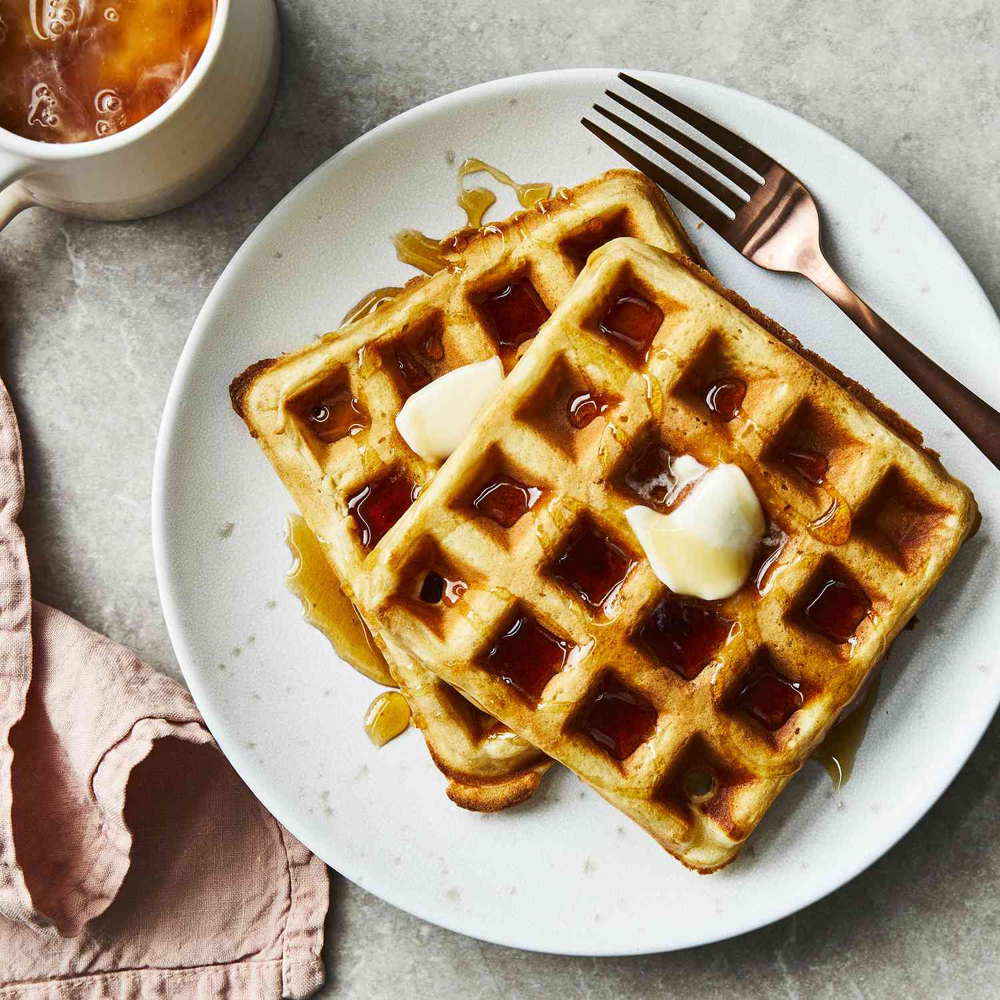
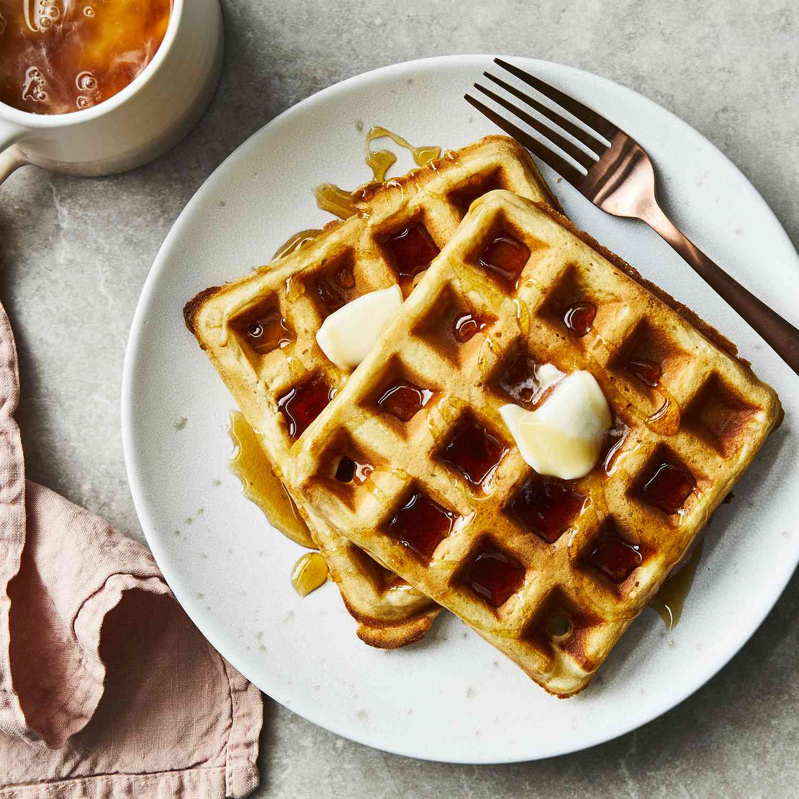

Waffles
 

Description:
A waffle is a leavened batter or dough cooked between two hot plates of a waffle iron, patterned to give a characteristic size, shape, and grid-like surface impression.
Waffles are cooked until they become golden-brown in color, with a crispy outer texture and a soft interior.
Ingredients:
- Eggs
- Flour
- Milk
- Oil
- Sugar
- Baking powder
- Salt
- Vanlla
- Cooking spray
Steps:
- Make the batter: Whisk the eggs, then add the flour, milk, and oil. Whisk in the sugar. Stir in the remaining ingredients
- Make the waffles: Pour the batter onto the hot, prepared waffle iron. Cook until golden brown and repeat with the remaining batter.
Waffle toppings
- Blueberry sauce
- Nuts(such as pecans or walnuts)
- Vanilla glaze
- Nutella
- Homemade whipped cream
- Fresh berries (such as blueberries or strawberries)